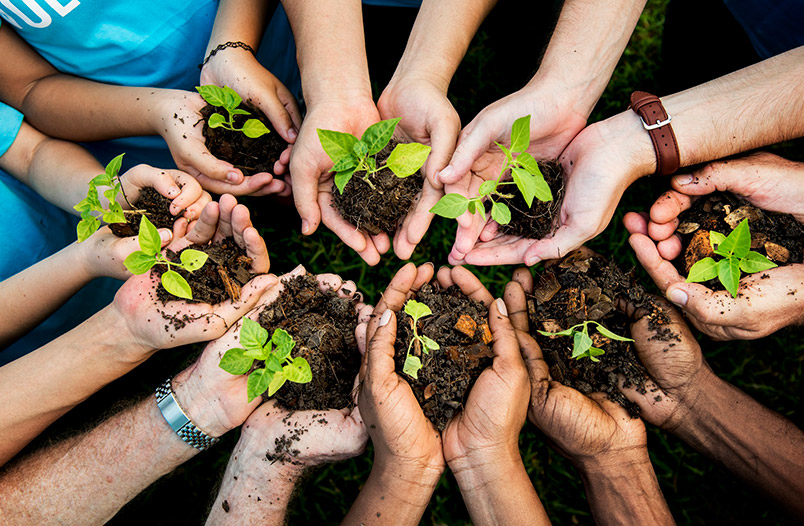

En la escuela Secundaria N°5 se realizaron los siguientes proyectos:
- Proyecto compost.
- ESI.
- Proyecto Arbol.
- Salud mental.
- Taller Mi primer voto.
PROYECTO COMPOST
Los alumnos de primer año junto a la profesora cecilia Nascimbene participaron en la feria distrital de arte, ciencia y tecnologia. En la misma expusieron sobre el proyecto de compostaje que vienen realizando desde el comienzo del ciclo lectivo. El lema del proyecto es "En nuestras manos tenemos una oportunidad de contribuir al mejoramiento de nuestro ambiente", y se logra mediante el reciclado de desechos, reduciendo restos organicos, reutilizando abono

ESI Y CONVIVENCIA
Se realizo la jornada de la ESI y CONVIVENCIA. En la primera parte abordamos en grupo flexibles los diferentes ejes de la ESI, y luego cada grupo expuso donde lo veia en la escuela. Hicimos tambien una dinamica grupal donde los alumnos pasaron al frente si se sentian identificados. Para cerrar la semana de la ESI, los alumnos de diferentes cursos junto a sus profesores de arte, pintaron la bandera LGTBQ+ en la entrada de la Escuela.

PROYECTO ARBOL
Un arbol, una historia: cada año planto un arbol, en el marco del proyecto "un arbol, una historia" construimos sueños, transformamos vidas, dejamos huellas.
TALLER SALUD MENTAL
Los alumnos de ciclo superior participaron de un taller sobre salud mental a cargo de la licenciada Yesica Fazzito.